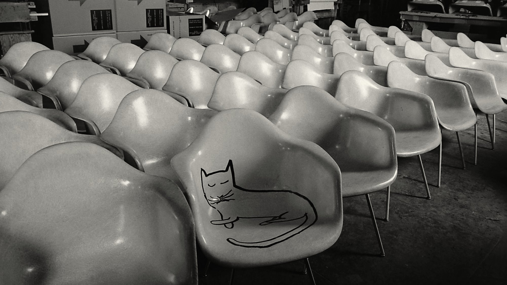
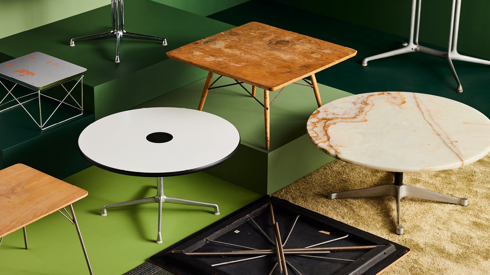
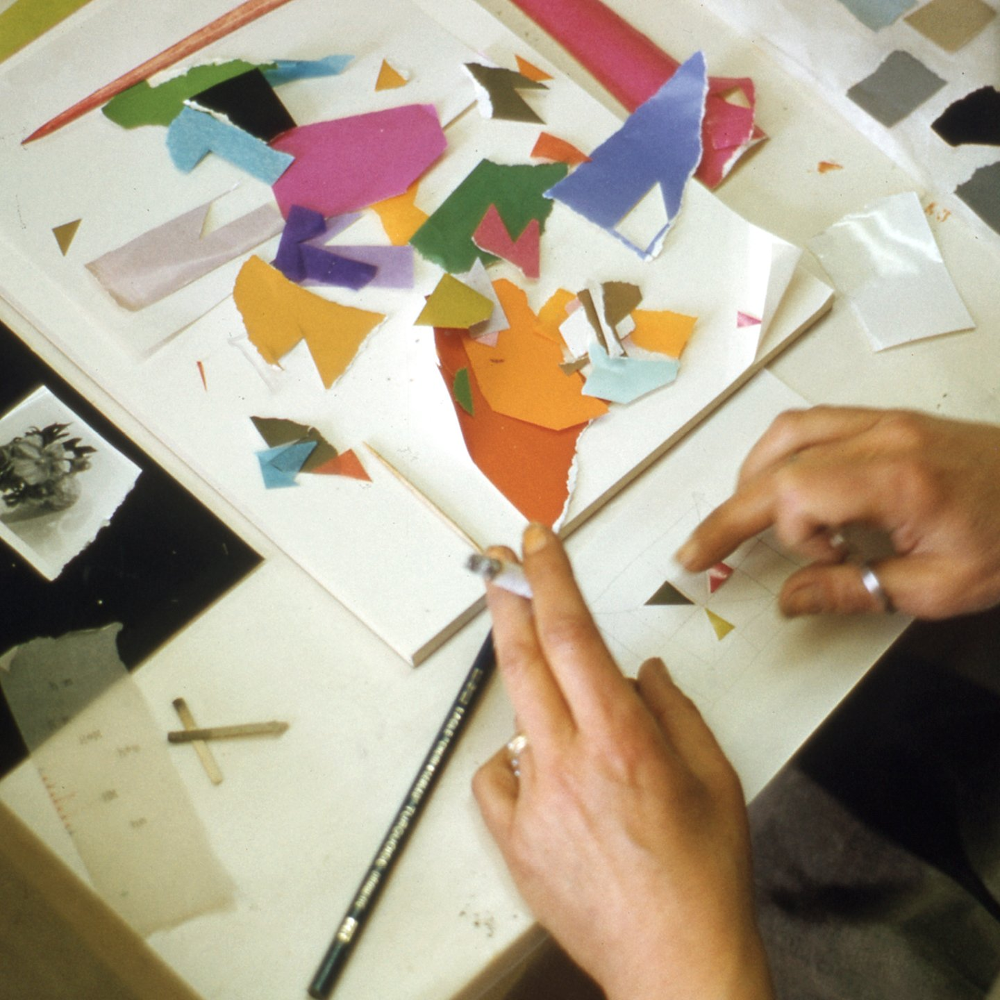

As the Eames Institute works to fully document, conserve, preserve, and archive the Eames Collection, we offer an ever-growing series of online exhibitions for you to explore the world of Ray and Charles.

In the summer of 1950, the artist Saul Steinberg spent a day at play within the Office of Charles and Ray Eames resulting in an iconic collaboration

Earnes chairs have always stolen the spotlight, but an adjacent thirty-year legacy of table designs demonstrates the designer's same thoughful approach to problem solving

From scraps and scribbles to maquettes and models, the Earnes Collection contains countless examples that illustrate Ray Earne's unique working methods and iconic collaborations.
Jalen's Homepage